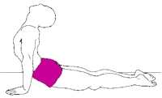

|
Flexibility is the ability to move muscles and joints through their full ranges of motion (ROM). Stretching refers to the process of elongating connective tissues, muscles and other tissues. Flexibility and stretching exercises fall into several categories depending on the manner in which the muscle is stretched.
- Static stretching - this involves stretching to the fartherest point of muscle elongation and holding the stretch. This method is the safest and has been proven as a means of enhancing flexibility. These stretches are easy to learn, easy to execute and requires little energy expenditure. Disadvantages of this method is that the exercises lack specificity and do little to enhance co-ordination.
- Dynamic and ballistic stretching - Ballistic stretching involves bobbing, bouncing, rebounding and rhythmic types of movement. Momentum is the driving force that moves the body or limb to forcibly increase the ROM. This technique is the most conroversial because it can cause the most soreness and injury as it fails to provide adequate time for the tissues to adapt to the stretch.
For this reason dynamic stretching is often incorporated into training programs. Dynamic stretching does not end with bouncing or jerky movements. Instead, all movements are controlled and thus enhance optimal dynamic flexibility, essential for all sports.
- Passive stretching - with this technique you are relaxed and need to make no contribution to the ROM. An external force is created by a manual or mechanical outside agent. This technique is most suitable when antagonist muscles restrict flexibility. But, there is a great risk of soreness and injury if a partner applies the external force incorrectly.
- Active stretching - This is accomplished by using your own muscles without the application of any external force e.g. standing upright and slowly lifting one leg as high as possible. Active stretching is preferred when the weakness of the muscles producing the movement (agonists) restrict flexibility. This form of exercise is essential to the athlete because it promotes dynamic flexibility and is the most specific to a given discipline. These stretches are easier to work into a routine as they do not require equipment or a partner.
Incorporating a stretching program into your workout
Begin with a general warm-up. This can consist of movements not directly related to the activity itself i.e. joint rotations, gentle twisting & bending, brisk walking, jogging or rope-skipping. Here the goal is to increase muscle blood-flow, increase your rate of respiration and volume of oxygen intake and to raise your core body temperature.
General recommendations (duration, frequency and intensity will depend on your level of flexibility) for a healthy individual...
- Perform two to three repetitions of each stretch for a duration of 10 seconds; or one repetition of each stretch for 30 seconds.
- As training progresses, increases the number of successive repetitions and gradually increase your range of motion.
- As a general rule, non-athletes should stretch at least once a day, three to five days per week to maintain flexibility (more if your want to improve). Depending on the sport, dedicated and serious athletes may require two to three stretching sessions per day for 6 to 7 days per week.
- Within a workout session, gently stretch after a light warm-up, keeping your main stretching session for after the main part of your workout. At this stage your tissue temperatures are highest, making stretching both safer and more productive.
- Stretch intensity is decided by the athlete. In general, stretch to the point of tension, not pain.
All pictures and instructions have been taken from the following book. I have taken the liberty of adding colour.
Alter, M.J. (1998) Sport Stretches (2ed). Human Kinetics. Illinois.
|
Anterior ankle and instep
- Kneel with your shins and instep elevated by a folded towel and your toes pointing backwards.
- Exhale and sit on the top of your heels (if you can).
|
Be sure your buttocks sit on top of your heels and not between your feet. The later position is called 'W sitting' and is bad for the knees. Do not do this stretch if you have knee problems. |
|
Achilles tendon and posterior lower leg
- Lean forward against a wall with one leg bent and the other leg straight with the heel raised.
- Exhale, bend your arms, lean towards the wall, and slowly shift your weight forward while attempting to press your rear heel to the floor.
|
This stretch also effectively stretches the tissues behind the knee. |
|
Hamstrings
- Sit on the floor with one leg straight and the other bent at the knee with the heel touching the inside of the opposite thigh.
- Lower the outside of the thigh and calf of the bent leg onto the floor.
- Exhale, keep the extended leg straight, and lower your upper torso onto your thigh.
|
Try contracting your quadriceps to alleviate tension in your hamstrings. |
|
Adductors
- Sit on the floor with your buttocks against a wall (or not), your legs flexed and spread, and your heels touching each other.
- Grasp your feet or ankles and pull them as close to your groin as possible.
- Exhale and lean forward from the hips. Keep your back straight and attempt to lower your chest to the floor.
|
If you have tight adductors, you may find it easier to perform this stretch with your heels extended slightly forward. |
|
Quadriceps
- Kneel with your knees together, buttocks on the floor, heels by the sides of your thighs, and toes pointing backwards.
- Exhale and lean backward without letting your feet flare out to the sides.
|
Do not arch your back. Instead, contract your gluteals and rotate your pelvis backward. Do not allow your knees to rise off the floor or spread apart. |
|
Hips and gluteals
- Sit on the floor and flex your left knee so that your left foot points to your right.
- Cross your right leg over your left leg and place your right floot flat on the floor.
- Exhale, bend your upper torso forward, and place your head on your bottom knee.
|
|  |
Abdominals
- Lie face down on the floor with your body extended.
- Place your palms on the floor by your hips with your fingers pointing forward.
- Exhale, press down on the floor, raise your head and trunk, and arch your back while contracting the gluteals to prevent excessive compression of your lower back.
|
 |
Upper back
- Kneel on all fours, extend your arms forward, and lower your chest to the floor.
- Exhale, extend your shoulders, and press on the floor with your arms to arch your back.
|
|
Posterior neck
- Stand of sit and interlock your hands behind your head near the crown.
- Exhale, pull your head forward and allow your chin to rest on your chest. Keep your shoulders depressed during this stretch.
|
The stretch will be dissipated if your shoulders do not remain depressed. |
|
Pectorals
- Sit with both arms flexed and your hands interlocked behind your head.
- Your partner grasps both elbows and pulls them backward towards eachother.
|
|
Shoulder external rotators
- Sit or stand, flex your right arm, and raise your elbow to chest height.
- Flex and raise your left arm so its elbow can support your right elbow and intertwine your forearms so your left hand grasps your right wrist.
- Exhale and pull your wrist outward and downward.
|
 |
Triceps
- Sit or stand with one arm behind your lower back and as far up on your back as possible.
- Lift your other arm overhead, while holding a towel, and flex your elbow.
- Grasp the towel with your lower hand and inhale as you pull your hands toward each other.
- As your flexibility improves, forget the towel, and instead try to interlock your fingers.
|
This stretch is most effective when the raised elbow is against a wall. |
| | | | | | | |